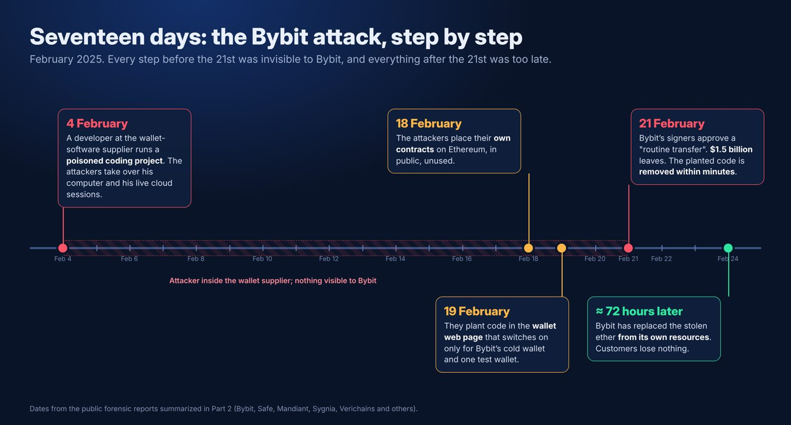
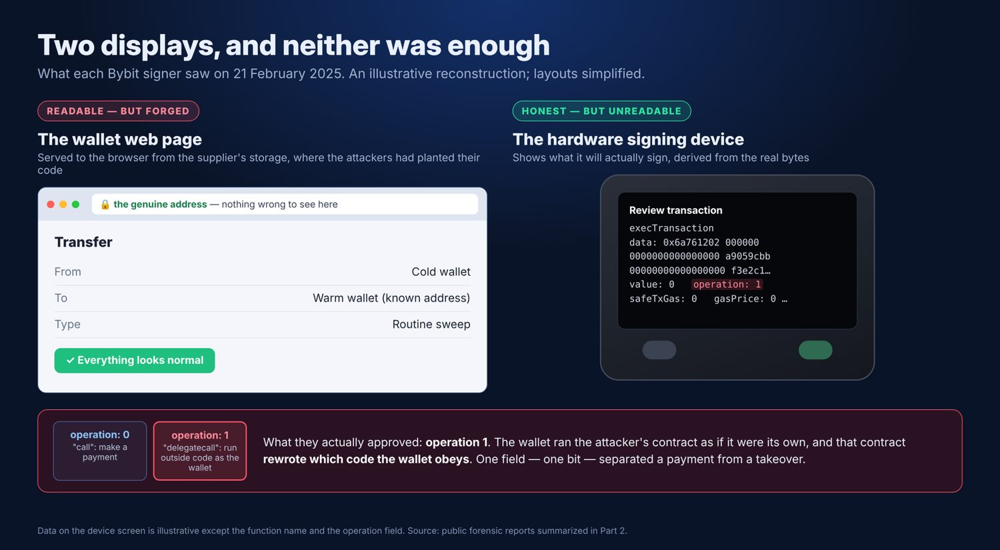

- The attack began seventeen days earlier, at a developer of the wallet software Bybit used.
- The attackers changed the web page the signers read. The hardware devices showed the truth, but in a form no one could read.
- One hidden setting turned a payment into a takeover of the wallet.
A wallet is two things wearing one name
A Safe wallet is really two things, and the heist lives in the seam between them.
One is on the blockchain: the smart contract that holds the funds and enforces the multiple-approvals rule. It lives on Ethereum, permanent and public, audited and formally verified for years. Think of it as the vault — the steel, the bolts, the lock. And be honest about that vault: it is only code, and code is fallible. Ethereum has the scars to prove it — the 2016 DAO hack, severe enough to split the chain in two (the Ethereum we know, and the unforked Ethereum Classic); the 2017 Parity freeze, which locked away a fortune for good. The chain is not magic. But its saving grace is transparency: those failures happened in the open, were dissected in the open, and the platform hardened because everyone could see what went wrong. It is fallible code that improves, because it cannot hide its mistakes.
The other is the thing humans actually touch: Safe{Wallet}, a web application that runs in an ordinary browser and shows the signers what they are about to approve. It is the window the guards look through to see inside the vault. And — this matters — it is served, like any website, from infrastructure that someone, somewhere, controls and updates.
The forensic reviews converged on one finding, and it is the hinge of the whole story: the vault was never breached. Bybit’s own systems were not breached. The Safe smart contracts were not breached. No private key was stolen. What was breached was the window — and not even Bybit’s window specifically. Investigators traced the malicious code back to the development infrastructure behind Safe{Wallet} itself, a company two doors down from the victim that most of the victims had never thought about.
The timeline, walked backward
Now walk the trail the way the investigators did, because the dates are where the suspense actually lives — and they begin almost three weeks before anyone at Bybit sat down to sign.

Early February — the 4th. It does not begin with Bybit at all. It begins with a developer at Safe — not a careless one, but one of the handful trusted with elevated access, which is exactly why he was chosen. The “building trust” was literal, and it followed a North Korean playbook security firms have documented for years: approach the target through ordinary professional channels — LinkedIn, a recruiter’s pitch, a friendly open-source collaborator — and maneuver them into running something that looks like work. In this case it was a crypto-themed coding project, a stock-investment simulator packaged as a Docker container, the kind of thing a developer clones and runs without a second thought. It was poisoned. Exactly how it took control of his Mac was never fully established, because the attackers afterward removed their malware and wiped the record of the commands that had been run. In other intrusions by the same group, security researchers have found the entry hidden in the way a common software library loads data, so that running the project runs code sent by the attackers. What the record does show is the project contacting a domain the attackers had registered two days earlier. From there they hijacked his cloud session tokens — stepping straight past multi-factor authentication, because a live session has already passed it — and reached the infrastructure that builds and serves the Safe{Wallet} web app. No alarm. No theft. Not yet. Just a door, propped open, in a building two companies away from the eventual victim.
February 18. The attackers deploy their own malicious smart contracts to the Ethereum blockchain — the machinery the trap will eventually hand control to. Three days before they will be used. In plain sight, because everything on Ethereum is in plain sight, and no one is looking for contracts that have not done anything yet.
February 19. The doctored code goes into the window. The attackers inject malicious JavaScript into the resources served by Safe{Wallet} — files investigators later recovered from the application’s Amazon S3 storage, timestamped two days before the heist. And here is the detail that turns this from a smash-and-grab into something colder: the injected code was written to wake up for exactly two addresses. Bybit’s cold wallet — and one test wallet the attackers controlled, presumably to rehearse on. For every other Safe user on earth, the window kept working perfectly. The lie was custom-cut for a single victim and otherwise invisible.
Then they waited. The trap was loaded, aimed, and dormant. Nothing to detect, because to everyone except Bybit, nothing was wrong.
February 21. Bybit’s signers sit down for the routine sweep. The poisoned window shows each of them a clean, ordinary transfer. Behind the glass, it hands their hardware devices something else to sign. They approve. The trap fires. And then — this is the part that tells you how careful these people were — the malicious code is removed from the window within minutes of execution. Cleaned up. The glass swapped back to normal, as if the doctored pane had never been there, leaving investigators to reconstruct from snapshots and timestamps what had been briefly true and was now gone.
The cast, assembled
So assemble the cast, the way you would at the end of the chapter.
The person whose security actually failed was a software developer at a wallet vendor, conned three weeks early. The people who were initially blamed were Bybit’s signers, who at the moment that mattered were doing everything right. These two groups had no relationship. No contact. No awareness that the other sat in their trust path at all. They were joined by one invisible thread: a single shared surface that one of them could silently write to, and the other could only read from — and had no choice but to trust completely.
That thread is the answer to the locked-room question from Part 1. The room was open the whole time because the room’s window was made of glass someone else could swap, and the people inside had no way to test whether what they were looking through was real.
What they actually signed
There is a deeper layer beneath the doctored window, and it is the layer that explains why the forgery was not just possible but total — why a competent professional, with an honest hardware device right there in their hand, could authorize their own catastrophe.
When you approve a transaction on a hardware wallet, what you are ultimately signing is a string of bytes. Those bytes are the transaction. The window’s entire job is to translate those bytes into a human sentence — send this much, to this address — so a person can decide. The person reads the sentence. The device signs the bytes. Everything rests on one assumption: that the sentence and the bytes say the same thing.
Under normal conditions they do, because the same software produces both. But that is exactly the assumption a compromised window breaks, and nothing downstream catches the break. The web app can show a routine transfer while sending the device bytes that do something entirely different. The human reads the honest sentence; the device receives the malicious paragraph. Both events really happen. They are simply not the same event.
Now — and this is the objection any careful reader should raise — the hardware device is not blind. It has its own screen, and it shows what it is actually about to sign, derived from the real bytes, not from the web app. So why didn’t that screen save them? If the web app lied, surely the device told the truth.
Here is the uncomfortable answer, and it is the hinge of the whole
modern problem. There were two displays, and neither did the
job alone. The web app’s display was rich and readable — and forged. The
device’s display was honest — and unreadable. A Safe transaction is a
nested thing: the device saw an execTransaction wrapper,
and the dangerous cargo — a single field flipped to
delegatecall, pointing at an unfamiliar contract — was buried
inside it, in a form the device could not translate into a human
sentence. As the forensic analysis put it, the standard signing format
simply cannot decode complex nested operations into readable language;
what the device could show was technically the truth and practically a
wall of undecoded data. So the signer faced a choice between a
convincing, readable lie and an honest, illegible blob — and, as Bybit’s
own CEO later acknowledged, the truth on the device’s trusted screen was
not fully checked before signing. Why would it be? The web app had
already told a complete, familiar story. The device’s screen, even
consulted carefully, would have shown data most people on earth could
not parse as this hands over your wallet.

That is the trap in one sentence: the readable display was not trustworthy, and the trustworthy display was not readable. The attack did not need to forge the device’s screen. It only needed the two surfaces to be different things — and for the comprehensible one to be the one the human believed.
And lest the device’s operation: 1 be dismissed as a red
flag any diligent signer should have caught: the forensic analysis notes
that Bybit had legitimately used a delegatecall transaction before. So
even a signer who noticed the flag had a ready, innocent explanation for
it — we’ve done this before — which is precisely how a
genuinely anomalous instruction hides inside the memory of a routine
one. The one signal that might have screamed was both buried and
plausibly deniable.
What Bybit’s signers actually signed was not a transfer at all.
Hidden in the bytes was an instruction to use a Safe feature called
delegatecall — a legitimate, documented, widely used
capability that lets a wallet temporarily run code from another contract
as if it were the wallet’s own. The plainest way to describe
it: delegatecall is a contract voluntarily stepping out of its own
sandbox — inviting outside code to run inside its protective
boundary, with its storage and its authority, escaping the isolation
that normally keeps one contract’s logic from rewriting another’s. Used
on trusted, fixed code, that is a convenience. Pointed at code an
attacker controls, it is a self-inflicted possession. The attacker
pointed it at one of the malicious contracts they had deployed on the
18th. When the signatures cleared, that contract executed inside the
wallet’s own context and overwrote the wallet’s most fundamental setting
— the pointer, stored in the contract’s very first storage slot, that
determines which code the wallet obeys. (Engineers reconstructing it
described the single low-level write, an SSTORE to slot
zero, that did the deed.) In one approved transaction, the wallet was
reprogrammed to take orders from the attacker. Draining it afterward was
an afterthought; the takeover was the heist.
Sit with the distinction, because it is the difference between a small crime and this one. The signers were not fooled about a number. They did not approve a transfer to the wrong address. They approved — unknowingly — a transplant of their wallet’s brain. The screen called it routine. A single hidden field, call versus delegatecall, a one-bit difference, was the entire distance between move some money and hand over the building.
The thing nobody designed and everybody trusted
The tempting word for all this is flaw. A bug someone should have caught. It is the wrong word, and insisting on it is how the industry keeps failing to learn the lesson. Nothing here was a bug. Every component did exactly what it was specified to do — the audited contracts behaved correctly, delegatecall is a legitimate feature wallets use constantly, the keys were never broken, the cryptography held, the blockchain did precisely what it promised.
That is what makes this a structural story and not a bug story — and structural stories are the ones worth your attention, because you cannot patch your way out of them. The hazard was not any broken part. It was a capability — run arbitrary external code in your own context, reachable through the same ordinary signing path as a routine payment — sitting unguarded in a system where the only thing between a payment and a hostile takeover was a human reading a screen that could be, and was, forged.
Older programmers will feel a chill of recognition here. Half a
century ago, programs were written with the unrestricted
goto — a command that let control leap from anywhere to
anywhere. It made code powerful and impossible to reason about. The fix,
structured programming, did not add a feature to detect bad
gotos, and — this is the part that matters for Bybit — it did not ban
the things people used goto for either. People used goto for
loops, early exits, error handling; structured programming gave each its
own named, bounded construct that expressed the intent directly and
could not be driven off a cliff. Once every legitimate use had
a structured form, keeping the raw jump was all risk and no benefit.
Delegatecall-into-arbitrary-code, reachable through the routine signing path, is the goto of smart-contract wallets: a benign-looking option that can launch the whole system into a catastrophic, self-modifying place, with nothing forcing operate on the assets and rewrite the wallet itself to look different. And its defense runs exactly parallel to the old defense of goto — but we need it; atomic batching is built on delegatecall. True, and beside the point, in precisely the way “but we need goto for loops” was beside the point. Building batching out of “run arbitrary external code in my own storage” is using a goto to write a for-loop: it works, and it drags along every other thing the raw primitive can do — including, at Bybit, rewriting the wallet’s brain. The structured answer is not “ban delegatecall,” it is “give batching its own first-class primitive that structurally cannot repoint the wallet’s implementation — and then there is no reason to expose the raw jump through the signing path at all.” The wallet world simply has not done for its privileged operations what software did for control flow decades ago. Bybit is what unstructured control flow looks like guarding $1.5 billion.
Whodunit — the least interesting question
The “who” is the least mysterious part, which is why it was never the mystery.
Within hours, on-chain investigators recognized the laundering choreography — the rapid fan-out across thousands of fresh addresses, the routing through mixers and cross-chain bridges, the swift conversion of the stolen ETH into Bitcoin — as the signature of the Lazarus Group, the umbrella name for North Korea’s state hacking apparatus, already responsible for a long lineage of crypto theft. The FBI soon attributed the heist publicly to North Korean actors, naming the unit it tracks as TraderTraitor. The money was on its way to a sanctioned regime, and most of it would never come back — a fact Part 3 takes up in earnest.
The identity matters for exactly one reason: it sets the caliber of adversary this architecture has to survive. Not an opportunist who got lucky. A patient, well-funded state intelligence operation that spent three weeks conning a third-party developer to pre-position a trap for a single target, rehearsed on a test wallet, and erased its own tracks within minutes of success. Any honest answer to how do we prevent the next one has to assume exactly this attacker: one who will never attack the vault if it is cheaper to poison the window — and who will wait.
What would have to be true
Strip the affair to its residue and this is what remains: the specific trick has been patched around. The thing that made it possible has not been removed.
To be fair — and fairness is the point of a reconstruction like this — the response was real. Safe shipped signing-interface improvements. The ecosystem accelerated “clear signing” standards that decode raw transactions into more readable form. Optional guard contracts now exist that can restrict delegatecall for wallets whose operators choose to add them. The bar is higher than it was in February 2025.
But look closely at what each fix touches, and what it leaves alone. Better decoding and a clearer interface run on the same kind of host-served surface that was poisoned in the first place — a more honest-looking window, delivered through the same glass an attacker has already proven they can swap. The delegatecall restriction is opt-in: a thing an operator must know about and choose to add, absent unless invoked. And the root capability — a human induced to produce a valid signature over bytes that do not match what they were shown — is untouched by all of it. An attacker rerunning the Bybit playbook against a current wallet need not even bother with delegatecall; an ordinary transfer to their own address, displayed as something else, reaches the same end. The choreography would change. The opening would not.
So what would have to be true for this class of theft to be structurally impossible, rather than merely discouraged? Two things at the level of the wallet itself — and one larger thing that belongs to Part 3.
First, the thing that tells the human what they are signing has to be both readable and trustworthy at once. Bybit’s signers had two displays and neither sufficed: a readable one that was forged, and a trustworthy one that was unreadable. As long as one compromisable surface both composes a transaction and renders the description of it, a forged description is always one breach away. The description a human approves has to be derived independently — from the actual bytes that will be signed — by something the host cannot reach or rewrite, and presented in language a human can act on. Not a readable lie, not an honest blob: one surface that is both legible and faithful, showing the effect — “this replaces the code your wallet obeys” — rather than a wall of undecoded data. The window has to be made of something other than glass the attacker can swap, and the truth it shows has to be in a language the guard can read.
It is worth naming, precisely, the mechanism that failed — because
the reconstructions tend to stop at “the frontend was compromised”
without asking what kind of thing the frontend was. It was an
ordinary web server. The readable display that lied to Bybit’s signers
was a web page, served the way virtually every web page is served: as
mutable files sitting on conventional infrastructure (here, an Amazon S3
bucket behind a content-delivery network) that a single party — or
anyone who compromises that party — can silently rewrite. And it is
essential to be exact about what was rewritten, because it defeats the
obvious objection. The signers did not download a fake page, or get
redirected to a lookalike, or fall for a phishing URL. They loaded the
genuine address — the real app.safe.global — and
the authoritative production code served from it had itself been
swapped at the source. The attackers used a stolen cloud
credential to replace the live JavaScript bundle in Safe’s own bucket;
from that moment, every browser that requested the real page from the
real URL received the poisoned version as if it were canonical, because
it was canonical. There was no more-careful navigation that
would have helped. The single correct copy was the corrupt one.
That is the structural property the attack exploited: not a flaw in the code, but the single-writer mutability of the surface delivering it. There is no consensus over what that page should contain, no quorum required to change it, no record that forces a change to be visible before it takes effect. One write to the production source, and the canonical truth everyone fetches is whatever the last writer made it. The signing logic underneath ran on a blockchain — consensus-protected, no single party able to rewrite it unilaterally — but the surface humans actually looked at had none of that protection. The hardened part of the system was the part nobody attacked; the soft, singly-writable part was the part that fell.
Engineers will reasonably ask why the standard defenses did not catch this, and the answer points exactly where this series is going. There are web-layer mitigations for served-code tampering — chiefly Subresource Integrity (SRI), where the page references each script by a cryptographic hash so a browser refuses any bundle whose contents do not match, and immutability controls like S3 Object Lock that forbid overwriting a published file for a retention window. Several post-incident analyses noted that SRI or code-signing would have broken this specific attack, and that neither is yet standard practice for dApp frontends. They are real and worth adopting. But notice what they are: bolt-on integrity checks layered onto a fundamentally mutable, single-writer surface — a hash pinned by the very page an attacker with source access could also repin, an immutability flag one privileged credential can be configured to set or skip. They raise the cost of the swap; they do not remove the property that one writer controls the canonical copy. And none of them touches the arrangement that made the swap worth attempting in the first place: the same surface that composed the transaction was also the one that described it to the signers. Delivering that surface under consensus, so that no single party can rewrite it, would have closed this particular route. Separating the roles closes the whole class of attack — a surface that may only propose a transaction, and a description of it derived by a different party from the bytes that will actually be signed. Part 3 returns to both.
Second, the catastrophic capabilities cannot ride the same flat path as routine payments, separated only by a setting a human is expected to notice. This transaction would change what your wallet itself obeys has to be something the system structurally knows and can refuse — a marked, separate class — not something that depends on a tired professional catching a one-bit difference at the end of a long day. Remove the unrestricted jump; do not merely hope someone spots it.
Both have counterparts in older engineering fields, where they were learned only after costly failures: keep privileged operations apart from ordinary ones, and do not rely on a description produced by the very component whose output is being checked. Turning those principles into a working wallet architecture is a different matter, and it is not what the wallet industry has built. In the designs in wide use today, the host that proposes a transaction is still the one that describes it, and the device that signs it often still cannot read it. The industry has now lost money to that gap at a scale no bank robbery has ever reached — and, as Part 4 shows, lost it again twenty months later at four times that scale. Part 3 shows that the architecture can be built.
For now, the locked room is solved. The signers were careful; that was never the problem. The room was open the entire time, and built the way it was built, no amount of care could have told them.
But there is a question this leaves hanging, and it is the one that should keep an industry awake — not how was it stolen, but why, when it was, could almost none of it be returned. Bybit’s customers were made whole. Most victims of most of these attacks are not. The difference is not technical. It is that Bybit had something almost no one else in this system has — and that is where we go next.
Part 3: No Backstop — why crypto has no FDIC, no fraud desk, and no undo button; what the history of the only two “remedies” it has ever had teaches us; and why the coming tidal wave of stablecoins makes all of it urgent.
This is Part 2 of a four-part reconstruction. Parts 1 to 3 cover the February 2025 Bybit heist. Part 1, “The Locked Room,” set the scene and the false solution. Part 3, “No Backstop,” widens to the systemic question. Part 4, “Fifty Signatures,” reconstructs the October 2026 Binance theft by the same attacker. This series is published by a team building signing and coordination architecture of the kind discussed in Part 3. The reconstruction stands on the public record; figures and timeline are drawn from public forensic reports (Bybit, Safe, Mandiant, Sygnia, Verichains, Hacken, NCC Group, Check Point, SlowMist, Elastic Security Labs, Palo Alto Networks Unit 42 and others) and should be re-verified against primary sources before publication.